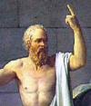

clinton.txt
 chaos
chaos chance, chance, chance, chance, chance, chance
 temporal_references
temporal_references again, tonight, years, years, again, tonight, every, year, every, tonight, now, times, time, year, when, everybody, when, when, now, moment, now, now, time, when, time, when, now, time, when, occasion, soon, then, now, while, while, while, when, while, while, everything, now, time, everyone, now, year's, year's, year, years, now, years, years, while, now, again, year, years, now, every, month, then, when, now, years, years, years, then, when, when, times, years, now, during, when, then, when, time, then, when, tonight, every, when, time, when, priorities, time, when, now, everybody, everything, often, now, priority, again, every, every, time, early, today, when, again, again, again, tonight, now, again, time, tonight
 depth
depth under, deeply, deeply, rooted, under, deeply, under, under, deep, deeply, deeply
 order
order constantly, divided, uniform, standards, simply, divided, measures, uniformed, measure, class, class, normalize, balancing, form, divided, divided, system, divided, divided, form
 instrumental_behavior
instrumental_behavior worked, work, building, counts, make, soldier, make, jobs, achieve, build, jobs, manufacturing, labor, build, make, make, build, make, won, reaching, use, try, finished, work, test, trying, trying, use, money, paying, costs, workers, job, working, costs, making, tried, cost, paid, spend, make, pay, pay, working, pay, money, jobs, trade, pay, working, money, works, occupy, build, tried, tried, tried, tried, test, finished, works, produced, jobs, record, ownership, efforts, trying, trying, job, jobs, businesses, make, win, make, picked, used, use, improve, work, make, work, make, affordable, available, jobs, make, founders, reach, build, build, work, build
 abstraction
abstraction sure, true, differences, problems, diversity, differences, choices, different, ideas, choices, different, think, think, believe, believe, concentrate, themselves, important, different, choice, chose, choices, believe, history, important, them, thought, almost, them, thought, choices, choices, believed, chose, chose, know, them, learning, chose, chose, important, except, almost, choices, them, them, different, believe, choice, them, almost, why, thought, important, them, almost, sure, think, believe, believe, them, choose, choose, different, concentrated, themselves, think, reasons, possibly, importantly, importantly, understands, understands, know, know, know, them, cause, ideas, problems, knows, ideas, important, qualities, understand, choices, proved, know, important, them, chose, chose, believe, ideas, ideas, history, chosen, choices, real, chose, chose, chose, choose, choose, knows
 restraint
restraint must, must, tax, tax, tax, tax, tax, necessary, tax, policy, police, police, policy, police, policy, police, tax, policies, tax, policy, policy, tax, must, jail, obligation, obligation
 moral_imperative
honored, honored, honored, honored, rights, honored, principle, honor, right, should, should, should, should, should, should, right, right, right, should, right, laws, should, responsibility, right, privileged, should, responsibility, right, legal, rights, rights, should
 affection
affection grateful, friends, friend, friends, friends, kind, embrace, like, friends, loved, kind, like, like, love, favors, favor, friends, like-minded, kind, like, friends, friends
 passivity
passivity safe, secure, peaceful, safe, security, retirement, security, rest, rest, security, retirement, security, security, safe, security, calm
 anxiety
anxiety terror, terror, trouble, terror, terrorists, terror, avoided, avoid, afraid, terrorists, afraid, terror, terror, terror, terror, troubled
expressive_behavior
played, played, play
 aggression
aggression fight, arguing, threats, fight, wounded, struggle, attacking, weapons, war, weapons, weapons, war, cuts, cuts, cut, cut, cutting, cutting, cuts, cuts, cut, assault, weapons, assault, weapons, violence, assault, weapons, weapons, destruction, cut, cut, opposed, cuts, cuts, kill, fight, war, hostile, enemy, fight, wounds, war, struggling, fought, battle, battle, disagree, resent, opposing, war, war, fight
 brink-passage
brink-passage streets, streets, street, street, streets, street, ports, ports, hall
 concreteness
concreteness here, here, here, toward, middle, east, across, where, at, where, far, long, out, far, away, at, at, nearly, out, at, at, behind, behind, out, out, out, off, out, place, open, at, off, among, off, off, back, at, at, over, over, between, off, over, middle, over, middle, background, out, across, side, at, positions, where, out, behind, side, at, point, over, widen, circle, at, over, at, over, over, sides
 timelessness
timelessness century, eternal
 water
water washington, river, waters, seas